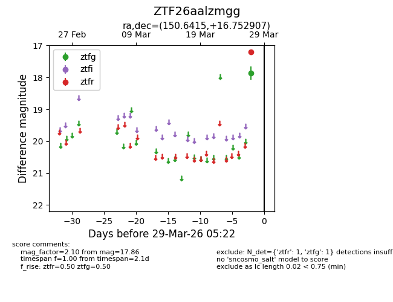
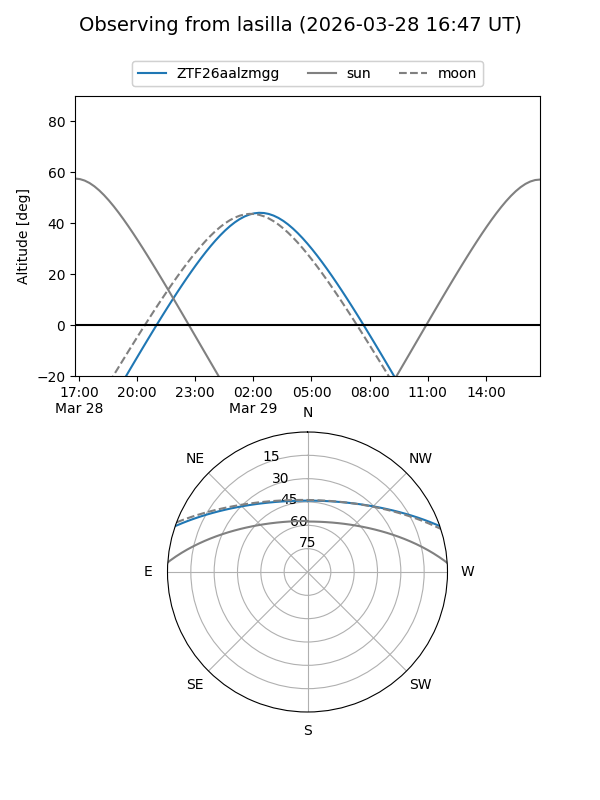
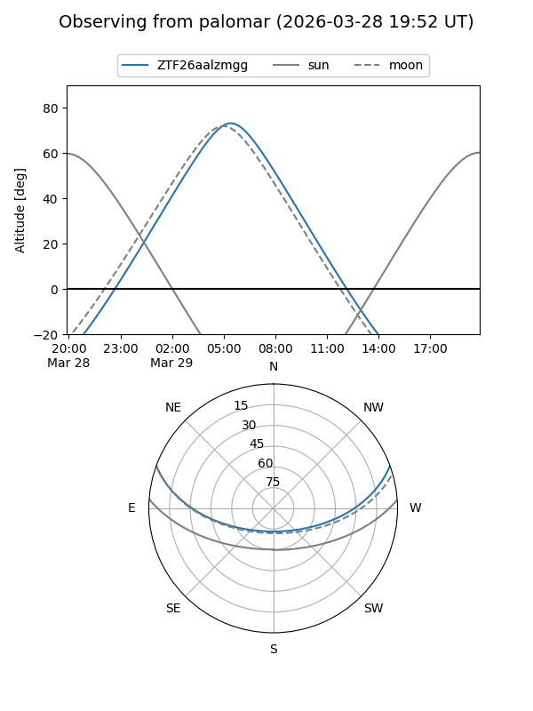

ZTF26aalzmgg
Target ZTF26aalzmgg at 2026-03-29 05:25
Aliases and brokers:
FINK: link
Lasair: link
ALeRCE: link
alt names
ZTF26aalzmgg (ztf,fink_ztf)
Coordinates:
equatorial (ra, dec) = 150.6415,+16.75291
equatorial (HMS+DMS) = 10:02:33.96,+16:45:10.46
galactic (l, b) = (218.8618,+49.69212)
Flags:
Photometry:
last ztfg=17.86, ztfr=17.19
1 ztfg, 1 ztfr detections
Lightcurve

Visibility


Additional plots